Beautifully Strong
About Us
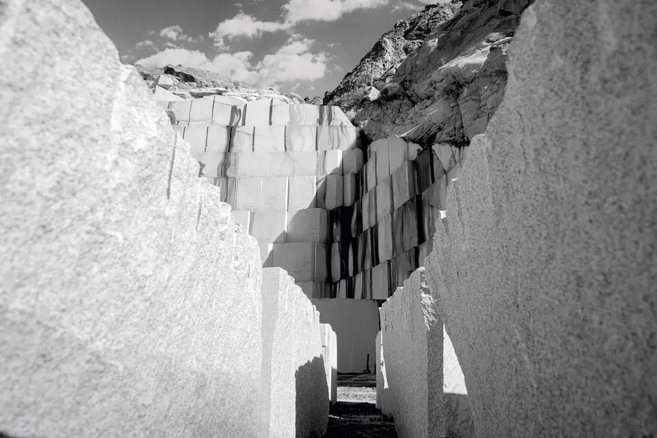
Rijen Kashan Cobblestone Production Company
Introduction
The Natanz White Granite Quarry, operated by Rijen Kashan Cobblestone Production Company and located in the Natanz region of Isfahan Province, is recognized as one of the largest and most reputable sources of white granite extraction in Iran. With its rich reserves and high-quality stones, the quarry has established a distinguished position in the national stone industry. The products, particularly white granite with shades ranging from pure white to light gray and a uniform texture, are widely used in various construction industries, interior decoration, urban space design, and major infrastructure projects. Modern exploitation methods, precise processing, and strict quality control are key features of the Rijen quarry, enabling its products to be well-known and accepted in both domestic and international markets.
Furthermore, due to its high density and uniform texture, this stone is suitable for various raw stone processing applications and has been remarkably successful in this field.
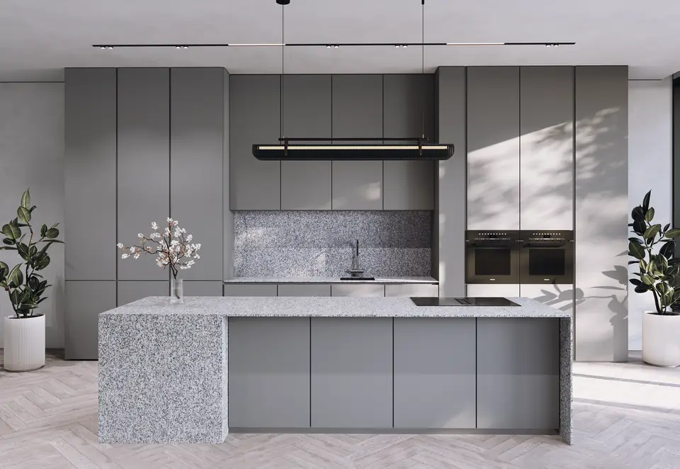
History
The operation of the Rijen Natanz White Granite Quarry began decades ago and has continued steadily ever since. Over time, in line with technical and technological advancements, the quarry has significantly developed its infrastructure. The use of advanced extraction and processing machinery, the implementation of modern stone processing technologies, and the employment of a specialized and experienced team in mining and stone engineering have made the Rijen quarry one of the leaders in the granite stone industry in Iran. The extracted stones from this quarry, due to their excellent color quality, desirable mechanical strength, and soft, uniform cotton-like texture, have always been of great interest to architects, interior designers, contractors, and exporters, playing an important role in both national and international projects.
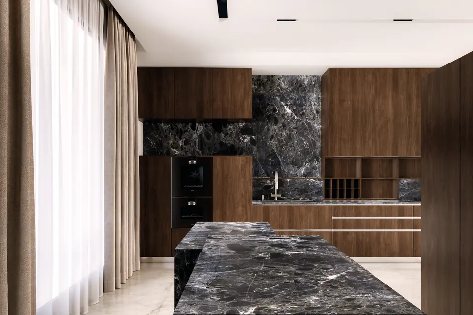
Natanz Rijen Gray Granite, extracted from the Rijen paving stone quarry located in Natanz County, Isfahan Province, is a type of granite-granodiorite formed through magmatic processes during the late Mesozoic and early Cenozoic geological periods. Its dense structure and the presence of dark-colored magmatic minerals give this stone a dark gray spectrum with a uniform and durable appearance.

Behkooshan Stone Processing Company
Behkooshan Stone Processing Company, established in 2017, is the largest producer of granite and quartzite slabs in Iran using advanced Multiwire technology. We utilize the latest stone processing technology and the most skilled staff to ensure the best quality and high diversity in our products.
Our production line is equipped with three Italian Multiwire machines which can cut stone blocks into slabs with different thicknesses from 12 millimeters upwards. Raw materials are selected with the utmost care and meticulousness from reputable mines around the world, including Iran, Brazil, Ukraine, India, and African countries.
Our mission is to provide our customers with a wide variety of high-quality and strong material to suit their taste and needs while pushing the boundaries of the construction industry.
What Makes Behkooshan Different?
- Creativity and adaptability to market needs
- Relationships based on value and trust
- Priority of quality over quantity
- Continuous learning and improvement
- Professional collaboration
- Transparency in processes
Why Behkooshan Granite and Quartzite?
- Exceptional Strength: Both granite and quartzite are known for their resistance to wear, heat, and pressure, making them ideal for high-traffic and high-performance areas.
- Natural Elegance: The striking patterns and colors of our stones add sophistication and depth to any interior or exterior space.
- Sustainable Choice: Sourced responsibly from premium Iranian quarries, our stones represent a long-lasting and eco-friendly solution.
- Versatile Applications: From countertops and flooring to cladding and facades, our stones are suitable for residential, commercial, and urban projects.
At Behkooshan, precision processing, expert craftsmanship, and customer focus come together to deliver natural stone solutions that inspire and endure. Whether you’re building a luxury residence, a modern commercial space, or a large-scale architectural project, our granite and quartzite offer the quality and character you need.
The Timeless Beauty of Natural Stones
Natural stones have always been a symbol of grandeur, authenticity and durability. Collections of marble, granite, onyx, travertine and limestone with bright or soft colors and harmonious shades create a luxurious and eye-catching space. The diversity of these stones is the result of precise processing with modern technologies and is ideal for special decorations and outstanding architectural projects.


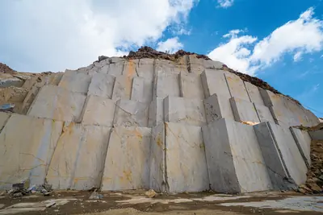
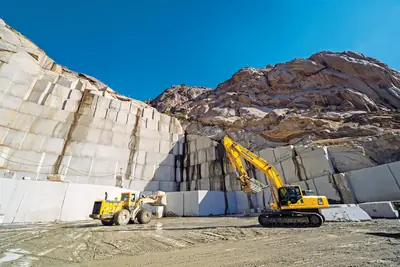
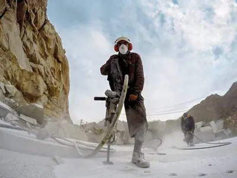
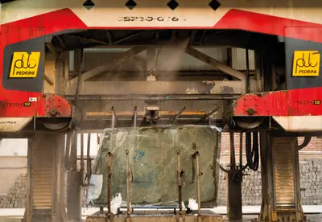
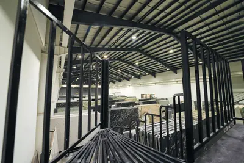
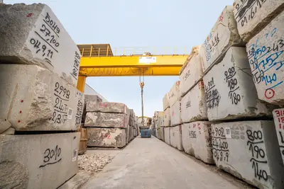
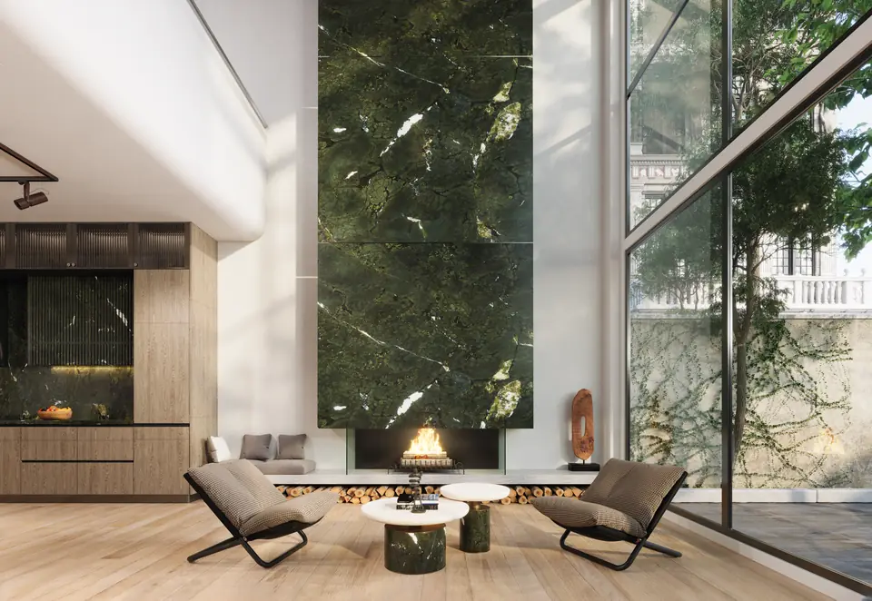
Natural Stone by Behkooshan, The Art of Granite and Quartzite
At Behkooshan Stone Processing Company, we specialize in two of the most durable and visually striking natural stones: granite and quartzite. These stones, formed through powerful geological processes over millions of years, embody strength, natural beauty, and timeless elegance.
Each block of granite and quartzite we process is a unique work of nature featuring rich textures, intricate veining, and color variations that bring individuality to every project. Our commitment is to transform these raw natural materials into refined products that meet the highest standards of quality and design.
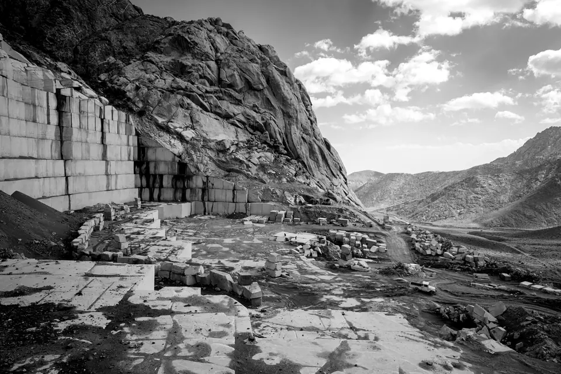
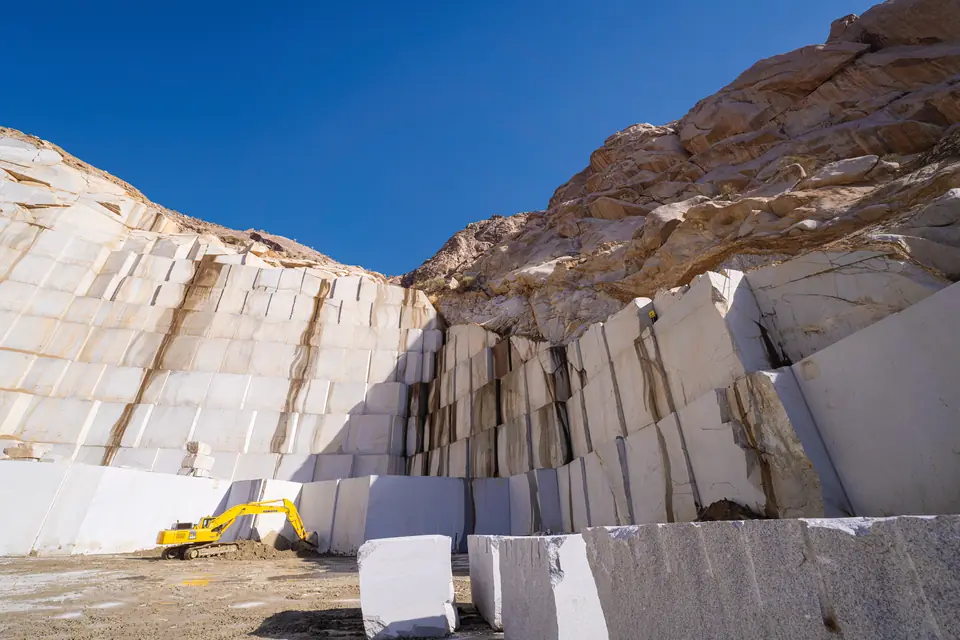
Two Generations,
One Legacy
First Generation – The Founders
Our company began its journey years ago through the dedication and expertise of two pioneers in the stone industry.
Mr. Hamid Reza Naseri Zadeh and Mr. Mohammad Jafar Mohammadi
Mr. Mohammad Jafar Mohammadi
Born in Behbahan, he holds a bachelor’s degree in Soil and Water Engineering from Agricultural Sciences and Natural Resources University of Khuzestan and a master’s degree in Soil Science from the University of Reading, UK. With over 20 years of international research experience and expertise in pressurized irrigation systems, he has been a founder and shareholder of Rijen Kashan Cobblestone Production Company and Behkooshan Stone Processing Company since 1993, leading the development and processing of building stones.
Mr. Hamid Reza Naseri Zadeh
Born in Kashan, he holds a Bachelor’s degree in Industrial Engineering from North Carolina State University. In 1993, he founded Rijen Kashan Cobblestone Production Company. With his innovative vision and smart management, he laid the strong foundations of the company and continues to guide its growth and excellence as a board member.
Second Generation – Today’s Leadership and Development
Two generations of committed and skilled professionals, sharing a common vision and utilizing modern machinery alongside efficient young talent, strive to ensure high product quality and to enhance the position of granite.
Mr. Pedram Mohammadi
Born in Tehran, he holds a bachelor’s degree in Theoretical Economics. He began his career at Rijen Kashan Cobblestone Production Company in 2005 and is currently the Chairman of Behkooshan Stone Processing Company and Rijen Kashan Cobblestone Production Company. With his expertise in economics and management, he has played a key role in ensuring sustainable growth and business development for the company.
Ms. Tannaz Naseri Zadeh
Born in Tehran, she holds a bachelor’s degree in Guidance and Counseling. She joined the management team in 2018 and is currently a board member of Behkooshan Stone Processing Company. Her presence has strengthened the company’s human resources management as well as its decision-making and advisory processes.
12 mm Stone
Slabs, the Latest
Innovation by
Behkooshan
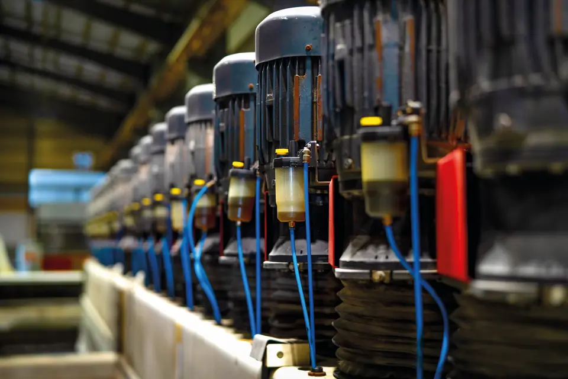
The latest product innovation by Behkooshan Company is a new generation of 12 mm thickness granite and quartzite slabs, designed to meet the demands of modern architecture and lightweight construction projects.
These ultra-thin slabs offer numerous advantages in construction and architectural applications, including reduced weight, ease of transportation and installation, refined design, and a more cost-effective solution.
Lightweight
Reduced structural load and lower transportation costs.
Ease of Installation
The thinner profile allows for greater cutting flexibility and faster, more efficient installation.
Aesthetic Excellence
Patterns and colors appear more vibrant, and when combined with modern materials such as metal, glass, and wood, they create a distinctive and elegant visual impact.
Economic Efficiency
Reduced thickness results in lower raw material consumption, leading to a more cost-effective solution especially advantageous for large-scale and mass construction projects.
Environmental Benefits
The use of this product significantly reduces raw material consumption. This not only reduces the extraction of natural resources but also helps decrease waste generation and energy usage. As a result, it contributes effectively to sustainable development and aligns with global environmental goals.
In addition, this production and installation process requires less manual labor, further optimizing operational efficiency.
This product is suitable for use in various architectural and construction spaces, including:
- Interior and exterior building façades
- Flooring for high-traffic areas
- Walls and decorative surface coverings
One of the successful implementations of this product in Iran is the Hayat Niavaran Project, which demonstrates its performance and aesthetic quality in real-world applications.
Additional Advantages of Reduced Thickness
Stone slabs with a thickness of 12 mm yield approximately 40% more surface area compared to slabs with a thickness of 20 mm during production.
As a result, larger areas can be covered more uniformly during installation, ensuring visual continuity and material efficiency.
Granite
Granite is an igneous rock of volcanic origin that is composed of about 30% quartz and 60% feldspar. This structure gives it exceptional hardness, high abrasion resistance and compressive strength. Granite comes in a wide range of colors and designs, from uniform to veined, and is an ideal choice for interior and exterior building applications due to its high resistance to various weather conditions.
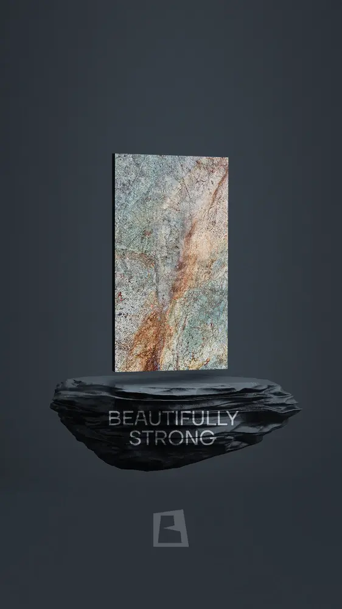

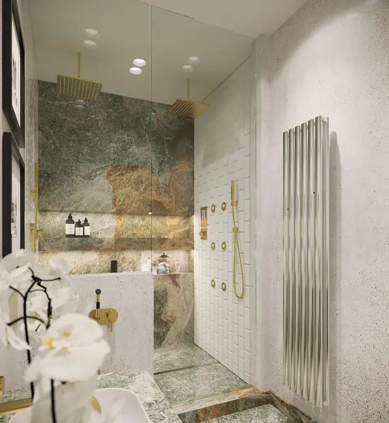
Quartzite
Quartzite is very similar to granite in terms of physical and mechanical features and is highly durable and hard. Depending on its type and structure, this stone is widely used in outdoor spaces and projects that require high resistance, and it gives the space a modern and distinctive aspect.
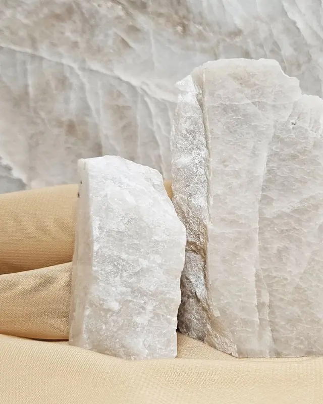
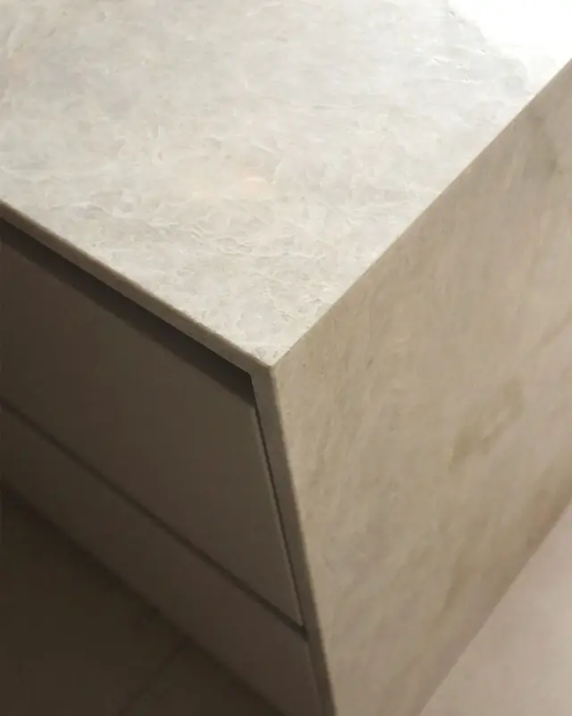

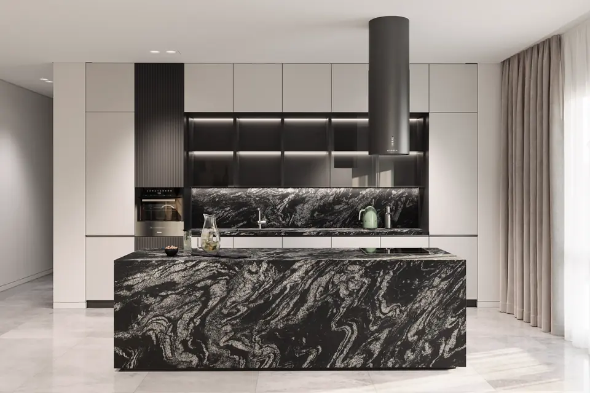
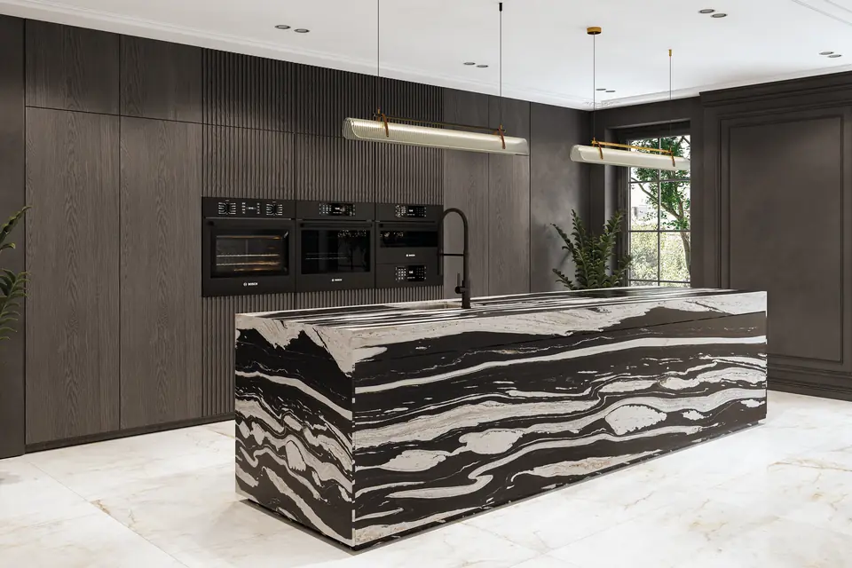
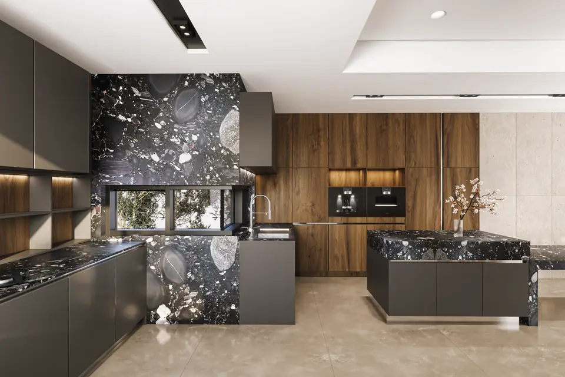
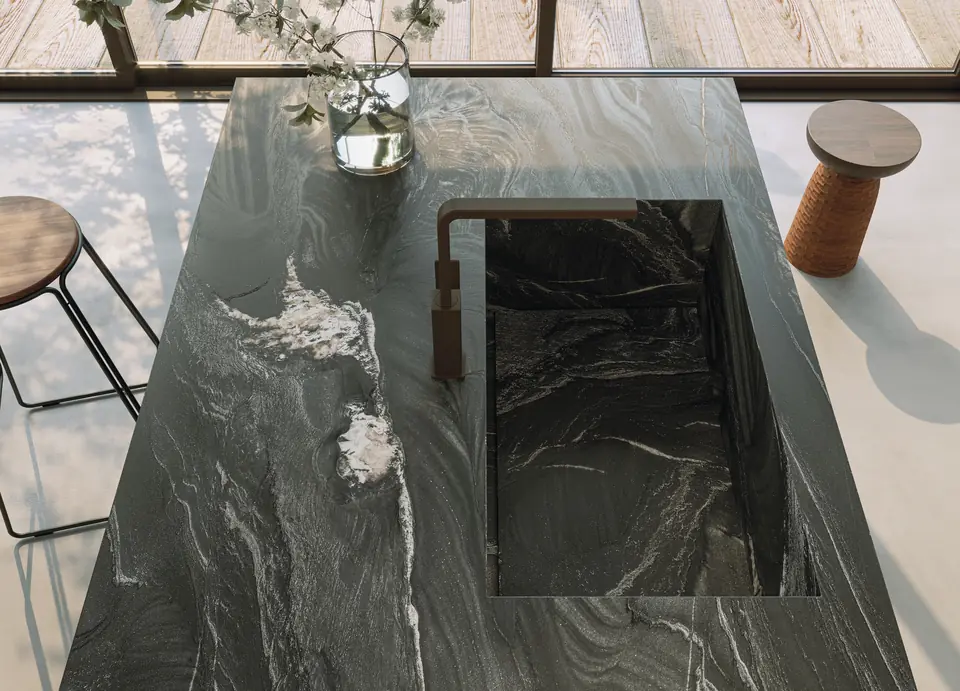
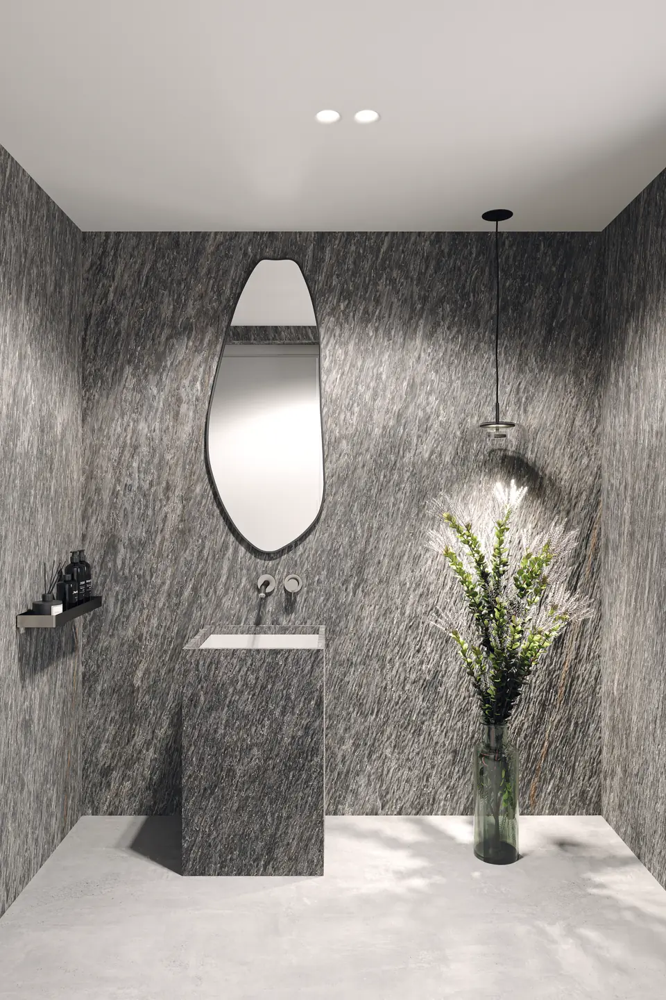